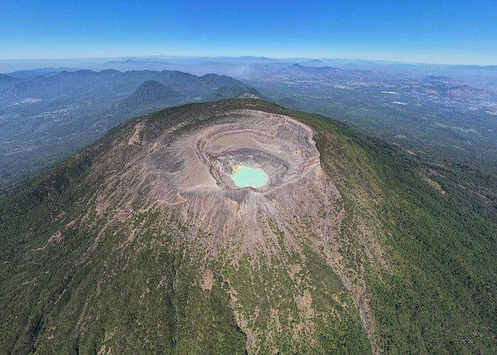
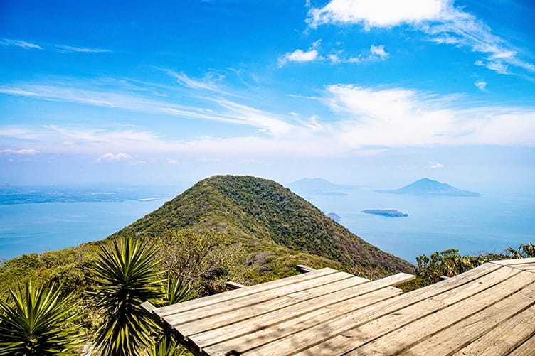
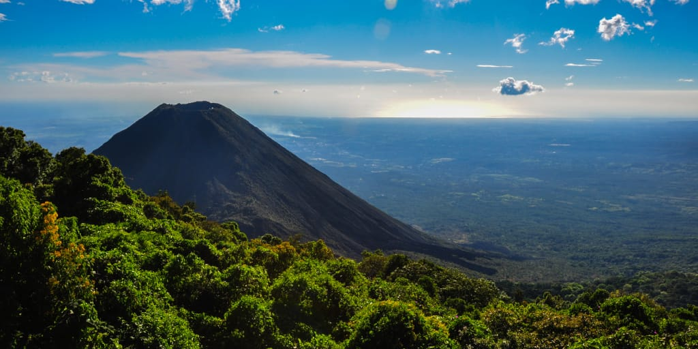
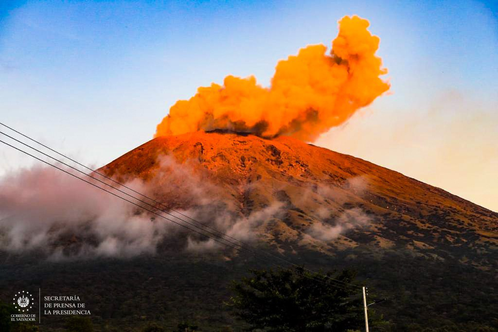
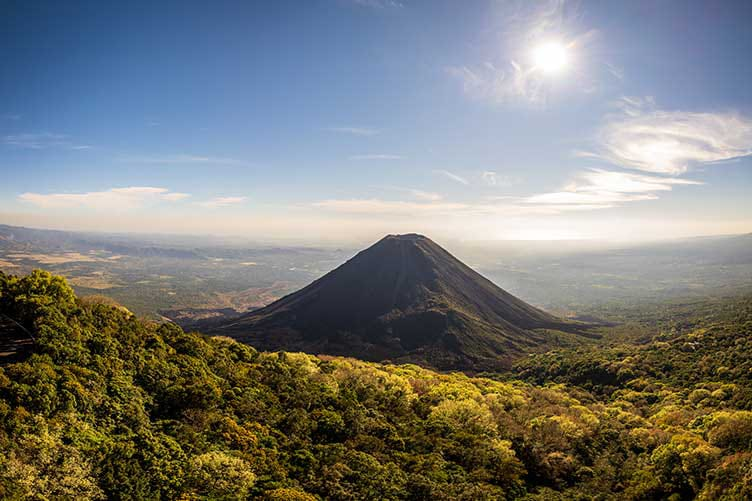

Es el volcán más alto de El Salvador (2,381 m). También conocido como Ilamatepec, tiene un cráter con un lago color turquesa.

Conocido como el “Faro del Pacífico” porque estuvo en erupción constante durante muchos años en el siglo XIX y XX.

También llamado Quezaltepeque. En su cráter se encuentra el Boquerón, una gran abertura volcánica muy visitada.

Es uno de los volcanes más activos del país. También se le conoce como Chaparrastique.

Ubicado al oriente del país, ofrece vistas espectaculares del Golfo de Fonseca.